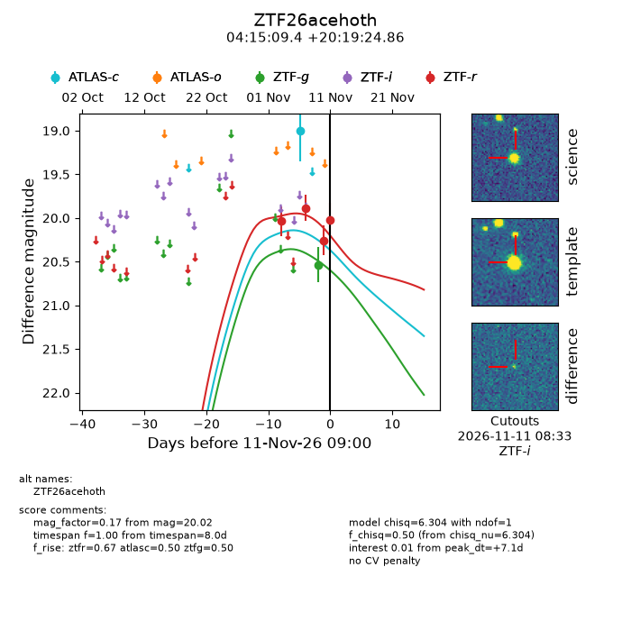
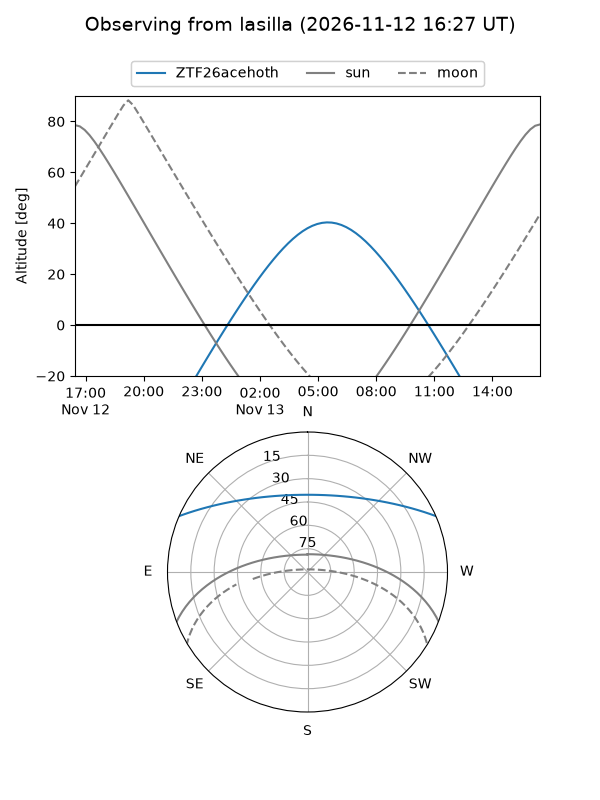
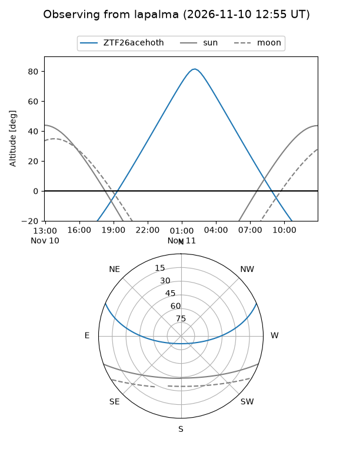
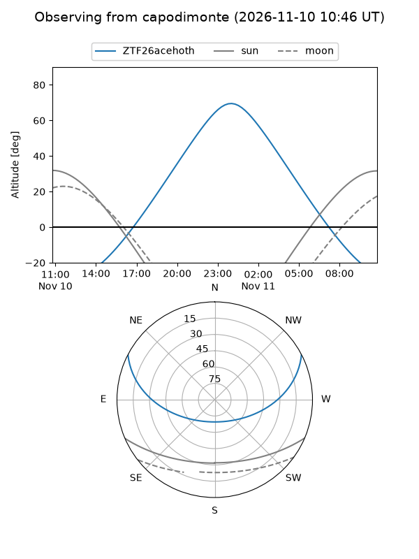
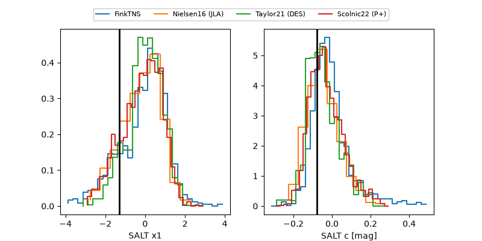

ZTF26acehoth
Target ZTF26acehoth at 2026-11-11 09:02
Aliases and brokers:
FINK-ZTF: ztf.fink-portal.org/ZTF26acehoth
Lasair-ZTF: lasair-ztf.lsst.ac.uk/objects/ZTF26acehoth
ALeRCE-ZTF: alerce.online/object/ZTF26acehoth
Direct TNS query: direct search
alt names
ZTF26acehoth (ztf,fink_ztf)
Coordinates:
equatorial (ra, dec) = 63.7893,+20.32357
equatorial (HMS+DMS) = 04:15:09.44,+20:19:24.86
galactic (l, b) = (174.4559,-21.57019)
Flags:
peak dt: +7.1
Photometry:
last atlasc=19.00, ztfg=20.54, ztfr=20.02
1 atlasc, 1 ztfg, 4 ztfr detections
Lightcurve

Visibility



Additional plots
